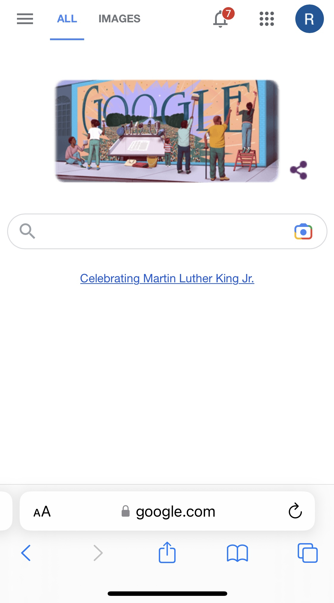
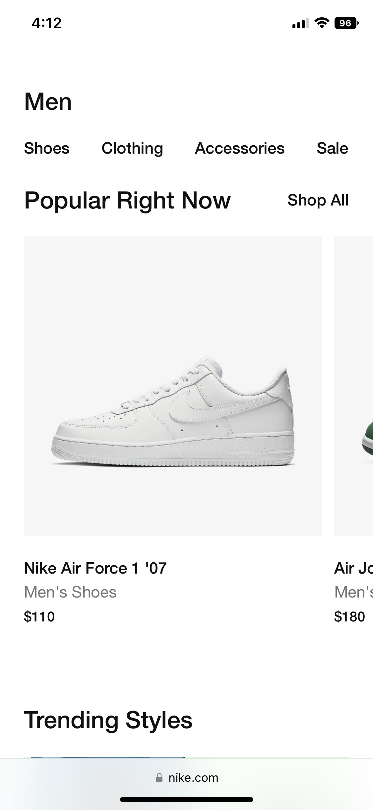

Rule of Thirds
Example: Apple
The rule of thirds is a design practice that focuses on the "sweet spots" of an image, piece of art, or website that can be found by dividing it up into 3 sections both horizontally and vertically. The sweet spots are found where the lines cross.
Apple does a great job of using the rule of thirds by utilizing the sweet spots. It is a little bit harder to tell on mobile, but it gets easier to see as you use a bigger viewport.
Hick's Law
Example: Google
Hick's Law says that the more options a user is given, the longer it will take them to make a decision. When there are too many options, users are more likely to get confused or frustrated and leave the site.
Google utilizes Hick's law to the extreme, as they really give the user one choice, and that is to use the search bar in the middle of the screen. Granted, there are other options on the borders of the viewport, but they do a great job of simplifying and not confusing the user with a lot of options.
White Space
Example: Nike
White Space is the "negative space", or the space in between or around content of a page. White space can be used to help a page appear not as cluttered and packed with content, and it can also improve readibility and overall user experience.
Nike does a great job of using white space and not making things look to crowded. Throughout their site, it seems very organized and not overwhelming because of the strategic use of negative space.